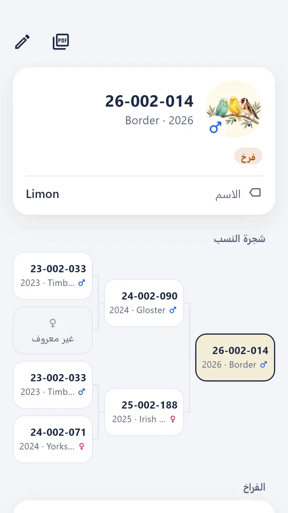
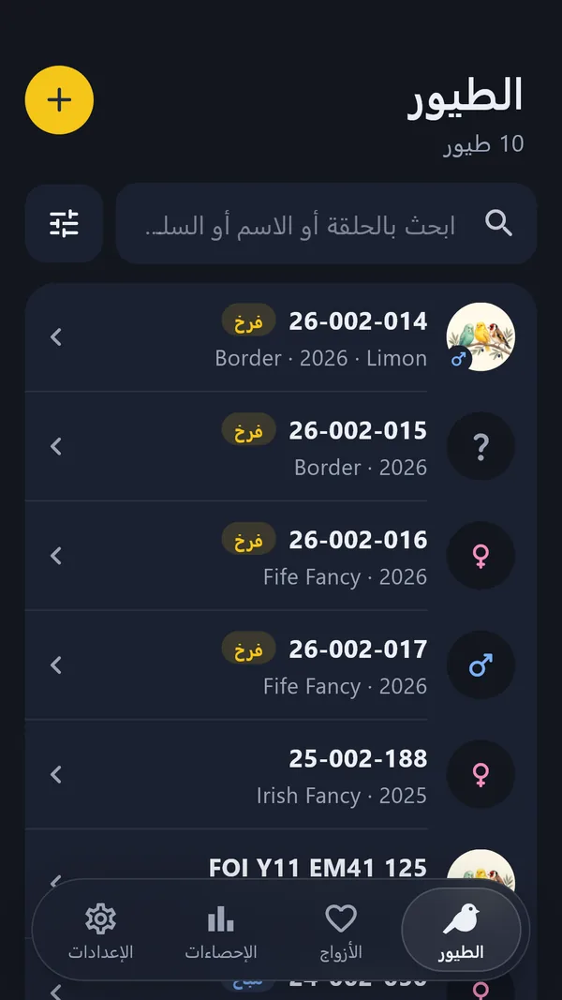
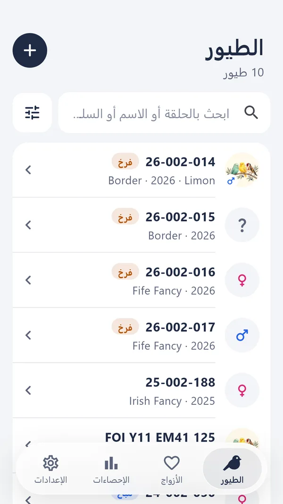
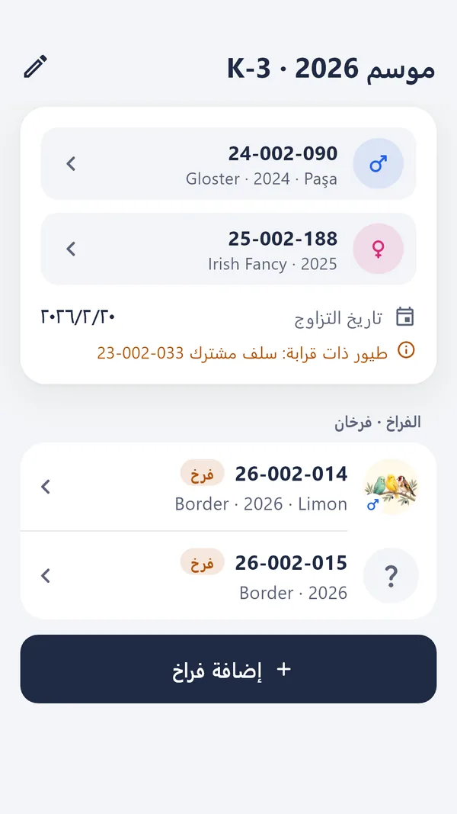
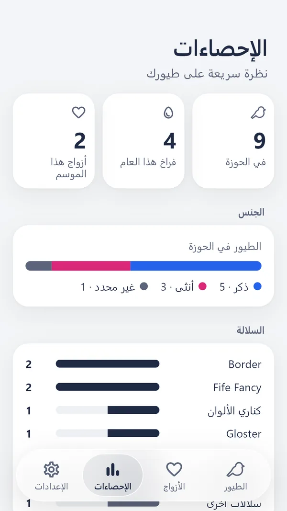
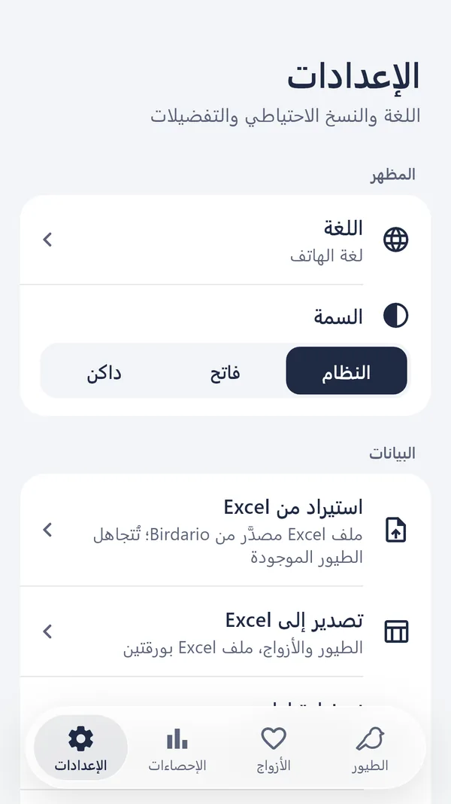

شجرة النسب
ثلاثة أجيال بنظرة واحدة.
تربط الأبوين مرة واحدة، ويتكفّل Birdario بالباقي. كل سلف بطاقة يمكنك فتحها، وبطاقة النسب تخرج ملف PDF جاهزًا للطباعة.
- المس سلفًا لفتح بطاقته
- بطاقة نسب PDF قابلة للمشاركة
- الفراخ تظهر في بطاقة أبويها

لمربّي الكناري وطيور الأقفاص
سجّل كل طائر برقمه واربط أبويه، فتتكوّن شجرة النسب تلقائيًا. الأزواج والفراخ والإحصاءات في مكان واحد.



كيف يعمل
الحلقة الرسمية أو رقمك الخاص، الجنس، السلالة، سنة الفقس وصورة. يقترح التطبيق الرقم التالي.
اختر الأب والأم من قائمتك. زاوج طيورك وأدخل فراخ الموسم دفعة واحدة.
ثلاثة أجيال في شاشة واحدة. المس سلفًا لفتح بطاقته، وشارك بطاقة النسب بصيغة PDF.
شجرة النسب
تربط الأبوين مرة واحدة، ويتكفّل Birdario بالباقي. كل سلف بطاقة يمكنك فتحها، وبطاقة النسب تخرج ملف PDF جاهزًا للطباعة.

الأزواج والفراخ
زاوج ذكرًا وأنثى وسجّل رقم القفص. أدخل الفراخ دفعة واحدة بدل إدخالها واحدًا تلو الآخر؛ تُملأ الأرقام بالترتيب.

الإحصاءات
الطيور في حوزتك، فراخ هذا العام، أزواج الموسم؛ التوزيع حسب الجنس والسلالة، والفقس حسب السنة وإنتاج كل زوج.

بياناتك
صدّر سجلاتك إلى Excel، وأضف صفوفًا جديدة بالتنسيق نفسه ثم استوردها. النسخة الاحتياطية تجمع كل السجلات والصور في ملف واحد.

والمزيد
حتى خمس صور لكل طائر، من الكاميرا أو المعرض.
في كناري الألوان، اختر الميلانين والليبوكروم والفئة كلًّا على حدة.
يواصل التطبيق سلسلة أرقامك، ويغيّر أرقام السنة عند بداية سنة جديدة.
ابحث بالحلقة أو الاسم أو السلالة، وصفِّ القائمة ورتّبها.
في الحوزة، مُباع، منقول، مفقود أو نافق: تعرف دائمًا أين كل طائر.
الطيور والأزواج المحذوفة تنتظر في السلة حتى تستعيدها.
فاتحة أو داكنة، حسب إعداد هاتفك أو باختيارك.
نوع الريش والخط الوراثي والمربّي والملاحظات في كل سجل.
الخصوصية
ليس لـ Birdario خادم. طيورك وملاحظاتك وصورك محفوظة في مجلد التطبيق الخاص، ولا تُرسل إلى أي مكان.
اقرأ سياسة الخصوصيةلا بريد إلكتروني ولا رقم هاتف ولا كلمة مرور.
لا خدمات تحليل أو إعلانات أو تتبّع.
سجّل في غرفة الطيور حتى من دون تغطية.
أنت من يقرّر أين يُحفظ ملف النسخة الاحتياطية.
السعر
مجانًا
كل الميزات، حتى 10 طيور.
دفعة واحدة
طيور بلا حدود، وأزواج بلا حدود.
يظهر السعر في المتجر بعملة بلدك.
الأسئلة
لا. لا يتصل Birdario بالإنترنت ليعمل؛ سجلاتك على هاتفك. شراء النسخة الكاملة وحده يحتاج إلى الاتصال بالمتجر.
أنشئ نسخة احتياطية من الإعدادات: تُجمع كل السجلات والصور في ملف واحد. انقل الملف إلى هاتفك الجديد واستعده.
نعم، بتنسيق Excel الخاص بـ Birdario. صدّر سجلاتك أولًا إلى Excel، واملأ قائمتك تحت العناوين نفسها دون تغيير الصف الأول، ثم استوردها. يعرض Birdario ملخصًا لما سيُضاف قبل الحفظ، ويتخطى الطيور المسجّلة من قبل.
سلالات الكناري مثل كناري الألوان وBorder وGloster وFife Fancy وYorkshire وTimbrado وRoller جاهزة في القائمة. ولأي طائر أقفاص آخر يكفي أن تكتب اسم السلالة.
يجري إعداد Birdario لأندرويد وiPhone، وسيصدر على المتجرين.
لا. عند بلوغ حدّ التجربة لا يمكنك إضافة طيور جديدة، لكن سجلاتك تبقى. ومع النسخة الكاملة تكمل من حيث توقفت.
Birdario قريبًا على Google Play وApp Store.